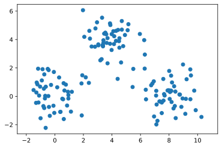
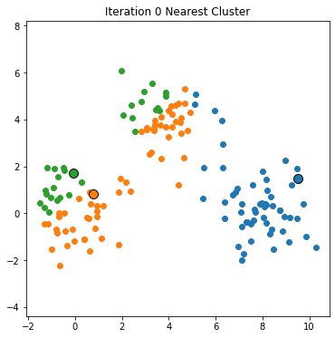
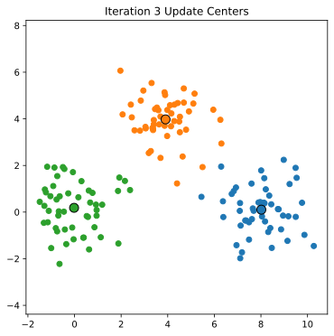

K-Means Clustering And Some Applications
Chris Tralie
We're now going to consider an unsupervised algorithm that has a model of geometric structure in our data, namely a "cluster." To get at it, let's generate and plot the following 2D dataset in matplotlib:
It looks like there are three distinct groups, or "clusters" of points here. As it turns out, making this notion precise is quit challenging, and there are many models for what constitutes a cluster. But at this stage of the course, we'll consider a constructive model of a cluster by following a simple geometric algorithm known as KMeans Clustering. The steps are as follows:
Algorithm: KMeansClustering(X, K)
Where X is a set of N points in d Euclidean dimensions, which we're representing as a data matrix above, and K < N is some a priori number of clusters that we think are in the data
- Choose K random points in the dataset called centers
- For each data point xi ∈ X, find the nearest cluster center, according to some distance
- Replace the coordinates each cluster center with the mean of the points that were closest to that center.
- Repeat steps 2 and 3 for some number of iterations
Below is an animation showing successive applications of steps 2 and 3 on the above data, assuming that there are 3 clusteres
At some point, we converge; that is, the assignment of points to cluster centers remains fixed, and so the updated cluster centers don't change. It only takes 4 iterations for us to converge in the above example:
Your task: Implement KMeans clustering to find the clusters of the above point set. What happens when you choose K = 2 vs K = 3 vs K = 4?
Algorithm Hints
Step 1: Choosing Random Points As Cluster Centers
Let's suppose that we store N points in d dimensions in an N x d data matrix X, and that we will store the n_clusters cluster centers in an n_clusters x d data matrix called clusters. Then, as we discussed in class, we can use the following code for step 1
Actually, there's a super slick shortcut we can use in numpy to do index-based selection, turning this into a 2-liner
Step 2: Finding Nearest Cluster Centers
Here's one option for pseudocode that finds the index j in the clusters list of the closest cluster center to each xi
-
For each xi ∈ X
- Let min_dist = infinity (
np.infin numpy) - Let min_index = 0
- For each cluster cj ∈ clusters
- Let d = dist(xi, cj)
-
If d < min_dist
- min_dist = d
- min_index = j
- Let min_dist = infinity (
We also have to think how we would compute a distance in high Euclidean dimensions. If you recall in the module on data vectorization, the magnitude of a vector is the square root of the sum of the squares of its components.
\[ |\vec{v}| = \sqrt{\sum_{i = 1}^d \vec{v}_i^2} \]
Which, in 2D (d = 2), reduces to the familiar pythagorean theorem for a right triangle with one side length along the x component and one side length along the y component
\[ |\vec{v}| = \sqrt{x^2 + y^2} \]
To compute the distance between two vectors, we compute the magnitude/length of the vector between them. This vector is obtained via a vector subtraction, so the final formula is the square root of the sum of the squared differences between parallel dimensions between the two vectors"
\[ |\vec{u} - \vec{v}| = \sqrt{\sum_{i = 1}^d (\vec{u}_i - \vec{v}_i)^2} \]
In 2D (d = 2), this reduces to
\[ |(a, b) - (c, d)| = \sqrt{ (a-c)^2 + (d-b)^2 } \]
Actually, there's a slick way to compute this using numpy's linear algebra library for two different vectors x and y
Step 3: Computing Means
See the notes on numpy tricks from week 10 on a slick way to do this.
Application: Image Quantization / Cartoonization
There are some cool applications in image processing, which I wrote a computational essay about below (Click here to download the jupyter file and here to download the image I was using)
{kind=link}